Module 03 · BPSK hai trạng thái: Helstrom dưới nhiễu loạn Gamma-Gamma
Từ bài báo gốc đến công thức, số liệu, quadrature oracle và mô phỏng
- Tính Helstrom bound của BPSK thuần và giải thích vì sao có lỗi tối thiểu
- Mô tả kênh Gamma-Gamma và nhiễu Gauss và dựng trạng thái hỗn hợp nhận được
- Đánh giá Eq. (39), Eq. (12) và chỉ ra giới hạn hiệu lực
- Nhận diện số liệu in trong bài mà không tái lập được
- Giải thích quadrature oracle dùng làm nhãn cho surrogate
📚 Tài liệu nguồn của module (đã xác minh bằng nội dung từng file)
| File trong kho | Bài báo (đã xác minh bằng nội dung) | Trang | Trạng thái | Đã dùng vào module |
|---|---|---|---|---|
| Đọc và tái lập Quantum_Relay-Assisted_Free-Space_Optical_Communication.pdf | Quantum Relay-Assisted Free-Space Optical Communication M. R. Bhatnagar, M. K. Arti, K. Bhatnagar · 2025 · IEEE Photonics J. 17(3), 2000215 | 15 | Đã đọc, khớp tên bài | Eq. (1) đến (82), Fig. 1 đến 7, Bảng I; phát hiện: Eq. (8)-(9) in dạng \(\sigma_R^1\), bảng \(\alpha,\beta\) theo \(L\) không tái lập. |
Bài giảng (slide)
Dùng phím ← → hoặc nút bấm; nút ⛶ để trình chiếu toàn màn hình.
Trạng thái coherent và phân bố photon
- \(|n\rangle\)trạng thái đúng n photon
- \(\bar n=|\alpha|^2\)số photon trung bình
- \(|\langle n|\alpha\rangle|^2\)phân bố Poisson tham số \(\bar n\)
Ví dụ: \(\bar n=0{,}5\) cho \(P(0)=e^{-0.5}=0.6065\), \(P(1)=0.3033\), \(P(\ge 3)=0.01439\). Vì vậy Fock truncation ở \(d=16\) đủ cho \(\bar n\) nhỏ.
Tính không trực giao của trạng thái coherent
- \(\alpha^{*}\beta\)tích có liên hợp phức
- \(|\alpha-\beta|^2\)khoảng cách bình phương trong mặt phẳng pha
Hai trạng thái luôn không trực giao khi \(\alpha\ne\beta\): \(|\langle\alpha|\beta\rangle|^2>0\) với mọi cặp hữu hạn, nên không thể phân biệt hoàn hảo bằng một lần đo.
| khoảng cách \(|\alpha-\beta|\) | \(|\langle\alpha|\beta\rangle|^2\) |
|---|---|
| 0.5 | 0.7788 |
| 1 | 0.3679 |
| 2 | 0.01832 |
| 3 | 1.234×10−4 |
Hai trạng thái BPSK và độ chồng lấn của chúng
- \(|\psi_0\rangle=|{+}\alpha\rangle\)bit 0
- \(|\psi_1\rangle=|{-}\alpha\rangle\)bit 1
Chứng minh ngắn (Eq. 79 đến 82): \(\langle\alpha|{-}\alpha\rangle=e^{-|\alpha|^2}\sum_n\frac{(-|\alpha|^2)^n}{n!}=e^{-|\alpha|^2}e^{-|\alpha|^2}\).
Helstrom bound cho hai trạng thái hỗn hợp
- \(p_0,p_1\)xác suất tiên nghiệm
- \(\lambda_k\)trị riêng của \(\Delta=p_1\rho_1-p_0\rho_0\)
- \(|X|=\sqrt{X^\dagger X}\)giá trị tuyệt đối toán tử
Phép đo tối ưu là POVM hai phần tử: \(Q_1=\sum_{\lambda_k>0}|\phi_k\rangle\langle\phi_k|\), \(Q_0=I-Q_1\) (Mục VI-A).
Helstrom bound của BPSK thuần
- \(c=|\langle\psi_0|\psi_1\rangle|\)độ chồng lấn
- \(\bar n=|\alpha|^2\)photon trung bình
| \(\bar n\) | \(e^{-4\bar n}\) | \(P_e\) chính xác | \(\tfrac14e^{-4\bar n}\) |
|---|---|---|---|
| 0.1 | 0.6703 | 0.2129 | 0.1676 |
| 0.25 | 0.3679 | 0.1025 | 0.09197 |
| 0.5 | 0.1353 | 0.03506 | 0.03383 |
| 1 | 0.01832 | 0.0046 | 0.004579 |
| 2 | 3.355×10−4 | 8.387×10−5 | 8.387×10−5 |
Với \(\bar n=0{,}5\): \(P_e=\tfrac12(1-\sqrt{1-0.1353})=0.03506\). Xấp xỉ \(\tfrac14e^{-4\bar n}\) chỉ tốt khi \(\bar n\) lớn.
Kiến trúc ba nút của bài báo gốc
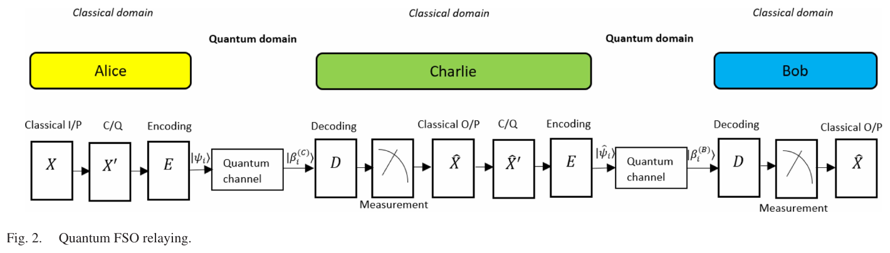
Nguồn: Bhatnagar, Arti, Bhatnagar, IEEE Photonics J. 17(3), 2000215, 2025, Fig. 2, tr. 5
Mỗi chặng là một kênh \(\beta_i=\sqrt{I}\,\psi_i+\epsilon\) (fading \(I\), nhiễu \(\epsilon\)). Charlie giải mã Helstrom rồi mã hoá lại: \(P_e\approx P_{e,1}(1-P_{e,2})+(1-P_{e,1})P_{e,2}\).
Dòng thời gian từ Helstrom đến quadrature oracle
Các mốc lấy từ danh mục tài liệu của bài gốc (tài liệu [22], [56], [60], [61], [44], [45], [9], [63], [64]) và ghi chú mã nguồn của dự án. Nét đứt: ảnh hưởng ý tưởng; nét liền: phụ thuộc trực tiếp.
Phân bố Gamma-Gamma của cường độ nhận
- \(K_\nu\)hàm Bessel loại hai biến đổi
- \(\alpha\)thang lớn (dao động chùm)
- \(\beta\)thang nhỏ (scintillation)
\(\mathbb E[I]=1\) và scintillation index \(\sigma_I^2=\tfrac1\alpha+\tfrac1\beta+\tfrac1{\alpha\beta}\). Với \(\alpha=4{,}0,\beta=1{,}9\): \(\sigma_I^2=0.9079\).
Rytov variance theo chiều dài tuyến
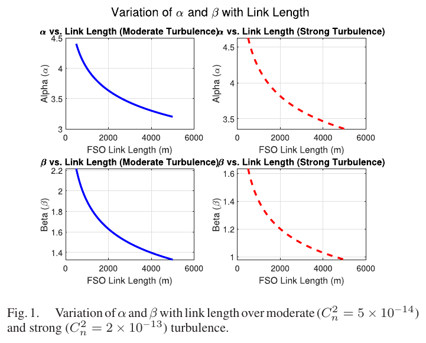
Nguồn: Bhatnagar, Arti, Bhatnagar, IEEE Photonics J. 17(3), 2000215, 2025, Fig. 1, tr. 4
- \(C_n^2\)cấu trúc chiết suất
- \(L\)chiều dài tuyến (m)
\(\lambda=1{,}55\,\mu\)m, \(C_n^2=5\cdot10^{-14}\), \(L=1200\) m cho \(\sigma_R^2=1.391\).
Eq. (8) và (9) đúng như bản in
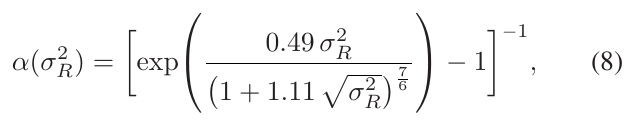
Nguồn: Bhatnagar, Arti, Bhatnagar, IEEE Photonics J. 17(3), 2000215, 2025, tr. 3
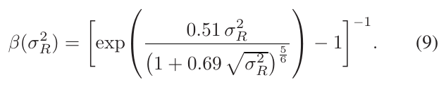
Nguồn: Bhatnagar, Arti, Bhatnagar, IEEE Photonics J. 17(3), 2000215, 2025, tr. 4
Dạng in: mẫu số \(1+1.11\sqrt{\sigma_R^2}\), tức \(\sigma_R^{1}\). Dạng Andrews–Phillips: \(1+1.11\,\sigma_R^{12/5}=1+1.11(\sigma_R^2)^{6/5}\). Hai dạng khác nhau rất nhiều khi \(\sigma_R^2>1\).
standard và legacy_branch_main.Từ độ rối đến tham số \(\alpha,\beta\)
- \(\sigma_R^{12/5}\)\((\sigma_R^2)^{6/5}\)
| \(L\) (m) | \(\sigma_R^2\) | chuẩn \(\alpha/\beta\) | dạng in \(\alpha/\beta\) |
|---|---|---|---|
| 2400 | 4.96 | 4.57 / 1.24 | 1.31 / 0.454 |
| 1200 | 1.39 | 4.09 / 2.07 | 3.42 / 1.85 |
| 800 | 0.661 | 5.15 / 3.49 | 6.05 / 3.82 |
| 200 | 0.0521 | 40.2 / 37.8 | 50.5 / 42 |
Tính với \(C_n^2=5\cdot10^{-14}\), \(\lambda=1{,}55\,\mu\)m. Dạng chuẩn không đơn điệu: \(\alpha\) đạt cực tiểu quanh 3.993 rồi tăng lại.
Kênh fading cộng nhiễu và trạng thái hỗn hợp
- \(\psi_i=\pm\gamma\)biên độ gửi
- \(\epsilon\)nhiễu Gauss thực
- \(\rho_i\)trạng thái hỗn hợp tại máy thu
Với \(I\) cố định, \(\beta_i\sim\mathcal N(\sqrt I\psi_i,\sigma^2)\): ma trận mật độ là trộn Gauss của các trạng thái coherent, nên hỗn hợp, không thuần. Sau đó lấy kỳ vọng theo \(I\) (Eq. 21).
Phần tử ma trận mật độ closed form
- \(m,n\)chỉ số Fock
- \(k\ \mathrm{even}\)chỉ tổng chẵn: lẻ cho tích phân Gauss bằng 0
| \((m,n)\) | công thức Eq. (20) | tích phân số Eq. (19) |
|---|---|---|
| (0,0) | 0.41754348 | 0.41754348 |
| (1,2) | 0.15470172 | 0.15470172 |
| (2,3) | 0.10341664 | 0.10341664 |
Kiểm tại \(I=1{,}3,\ \psi=0{,}9,\ \sigma=0{,}7\): hai cột khớp đến 15 chữ số. Bài báo viết tổng \(k\) không có ràng buộc "chẵn" ở Eq. (22) đến (24), nhưng các số hạng lẻ bằng 0.
Cầu phương xác định thay cho Monte Carlo
- \(w_a\)Gauss-Legendre trên \(\log I\) nhân mật độ GG
- \(v_b,x_b\)Gauss-Hermite chuẩn hoá
- \(n_I=48,n_W=41,d=16\)lưới và Fock truncation của dự án
Rồi \(P_e=\tfrac12\bigl(1-\sum_k|\lambda_k(\tfrac12\rho_0-\tfrac12\rho_1)|\bigr)\) bằng eigvalsh, không cần SDP. Ma trận cắt ở \(d\) được chuẩn hoá lại về vết 1.
Lỗi có điều kiện theo cường độ
- \(\gamma\)biên độ trường, \(\bar n=\gamma^2\)
- \(\sigma\)độ lệch chuẩn nhiễu
- \(I\)cường độ cố định
Kiểm số: \(I=1{,}3,\ \gamma=0{,}9,\ \sigma=0{,}7\) cho 0.04788053678 (công thức) và 0.04788053678 (tích phân Hermite 80 nút).
Closed form Eq. (39)
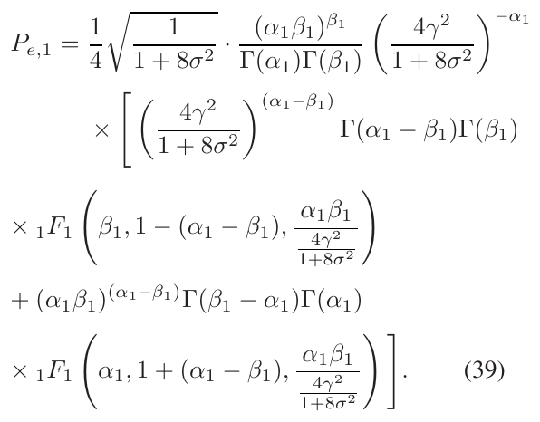
Nguồn: Bhatnagar, Arti, Bhatnagar, IEEE Photonics J. 17(3), 2000215, 2025, tr. 8
- \(_1F_1\)hàm siêu bội hợp lưu
Tính Eq. (39) từng bước
- \(\bar n=\gamma^2=4\)số photon
- \(1+8\sigma^2=9\)hệ số nhiễu
| \(\gamma\) | Eq. (39) (mpmath) | tích phân số | float64 trực tiếp |
|---|---|---|---|
| 0.5 | 0.07495593 | 0.07495593 | 1.030253×1022 |
| 1 | 0.05717773 | 0.05717773 | 0.07243743 |
| 1.5 | 0.04013436 | 0.04013436 | 0.04013436 |
| 2 | 0.02740942 | 0.02740942 | 0.02740942 |
| 3 | 0.01297816 | 0.01297816 | 0.01297816 |
| 4 | 0.006588648 | 0.006588648 | 0.006588648 |
Cột cuối sai ở \(\gamma\le1\): hai số hạng của Eq. (39) lớn và triệt tiêu nhau, cần độ chính xác cao (mpmath, 250 chữ số).
Eq. (39), trung bình Eq. (36) và Helstrom hỗn hợp
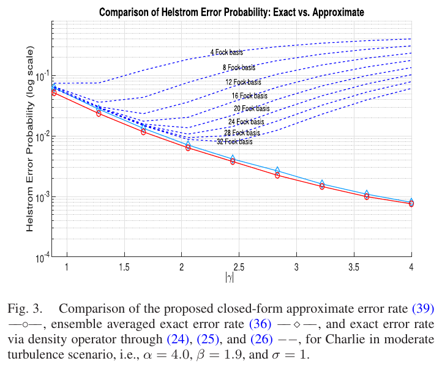
Nguồn: Bhatnagar, Arti, Bhatnagar, IEEE Photonics J. 17(3), 2000215, 2025, Fig. 3, tr. 9
| \(\sigma\) | \(\gamma\) | Eq. (39) | Eq. (36) trung bình | Helstrom hỗn hợp |
|---|---|---|---|---|
| 0.1 | 2 | 0.006858 | 0.007849 | 0.008755 |
| 0.5 | 2 | 0.01625 | 0.0219 | 0.02869 |
| 1 | 1 | 0.05718 | 0.08139 | 0.2167 |
| 1 | 2 | 0.02741 | 0.03863 | 0.08621 |
| 1 | 4 | 0.006589 | 0.009181 | 0.01826 |
\(\alpha=4,\beta=1{,}9\), \(d=96\), lưới \(48\times41\). Ở \(\sigma=1,\gamma=2\): hỗn hợp lớn gấp 3.15 lần Eq. (39).
Lỗi đầu cuối của relay hai chặng
- \(P_{e,1},P_{e,2}\)lỗi của chặng 1 và 2 (Eq. 39, 40)
Ví dụ: \(P_{e,1}=0{,}02,\ P_{e,2}=0{,}03\) cho \(P_e=0{,}02\cdot0{,}97+0{,}98\cdot0{,}03=0.0488\).
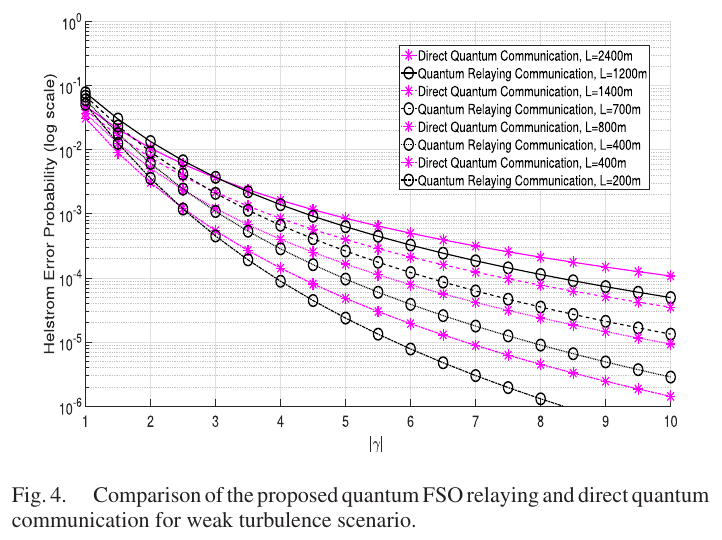
Nguồn: Bhatnagar, Arti, Bhatnagar, IEEE Photonics J. 17(3), 2000215, 2025, Fig. 4, tr. 9
Giao điểm giữa relay và đường trực tiếp
| \(L_\mathrm{direct}\) | \(\gamma\) | trực tiếp | relay \(L/2+L/2\) |
|---|---|---|---|
| 2400 | 1 | 0.04766 | 0.0774 |
| 2400 | 4 | 0.001623 | 0.001386 |
| 1400 | 1 | 0.04186 | 0.06826 |
| 1400 | 4 | 8.459×10−4 | 6.618×10−4 |
Tính bằng Eq. (39), (40), (12) với bảng \(\alpha,\beta\) của bài, \(\sigma=0{,}1\). Với \(L=2400\) m, relay chỉ thắng khi \(\gamma>3.1\).
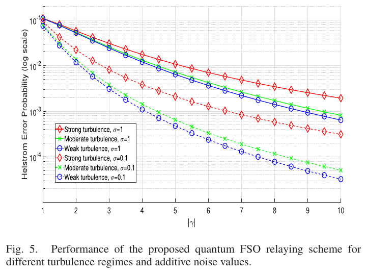
Nguồn: Bhatnagar, Arti, Bhatnagar, IEEE Photonics J. 17(3), 2000215, 2025, Fig. 5, tr. 10
Ba chế độ nhiễu loạn của Bảng I
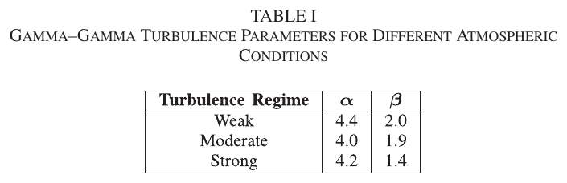
Nguồn: Bhatnagar, Arti, Bhatnagar, IEEE Photonics J. 17(3), 2000215, 2025, Table I, tr. 10
| chế độ | \(\alpha\) | \(\beta\) | \(\sigma_I^2\) |
|---|---|---|---|
| yếu | 4.4 | 2 | 0.8409 |
| vừa | 4 | 1.9 | 0.9079 |
| mạnh | 4.2 | 1.4 | 1.122 |
Giới hạn hiệu lực của xấp xỉ lỗi cao
- \(x\)độ chồng lấn bình phương tức thời
| \(\gamma^2\) | thuần Eq. (5) | Eq. (39) (\(\sigma=0{,}1\)) |
|---|---|---|
| 0.05 | 0.2871 | 0.2026 |
| 0.1 | 0.2129 | 0.1744 |
| 0.25 | 0.1025 | 0.1209 |
| 0.5 | 0.03506 | 0.07666 |
Cận hỗn hợp cao hơn Eq. (39)
- \(\mathbb E[P_e^{\text{pure}}]\)Eq. (36): máy thu biết \(I\) và \(\epsilon\)
- \(\bar\rho_i\)trạng thái trung bình hỗn hợp
Máy thu thật không biết \(I\) và \(\epsilon\), nên phải phân biệt hai trạng thái trung bình \(\bar\rho_0,\bar\rho_1\). Tại \(\sigma=1,\gamma=2\): 0.02741 < 0.03863 < 0.08621.
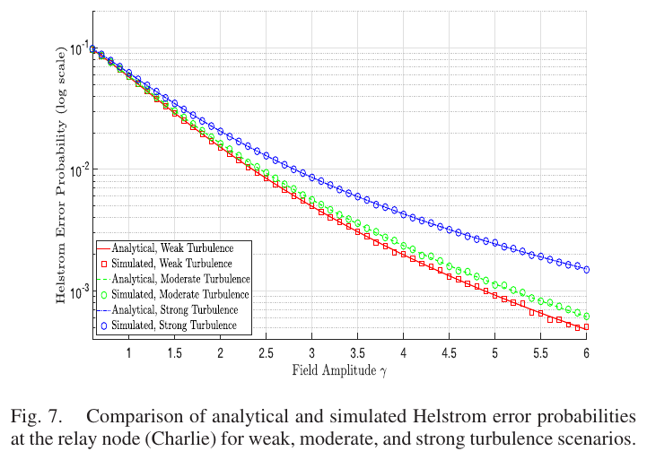
Nguồn: Bhatnagar, Arti, Bhatnagar, IEEE Photonics J. 17(3), 2000215, 2025, Fig. 7, tr. 11
Hai dạng của Eq. (8) và (9) cho hai kết quả khác
- \(L=2400\) min: \(\alpha=1.306\); chuẩn: \(4.569\)
| \(C_n^2\) | \(L\) (m) | \(\sigma_R^2\) | in \(\alpha/\beta\) | chuẩn \(\alpha/\beta\) |
|---|---|---|---|---|
| 5.0×10−14 | 1000 | 0.995 | 4.41 / 2.57 | 4.4 / 2.57 |
| 5.0×10−14 | 2400 | 4.96 | 1.31 / 0.454 | 4.57 / 1.24 |
| 2.0×10−13 | 1000 | 3.98 | 1.54 / 0.594 | 4.34 / 1.31 |
| 2.0×10−13 | 2400 | 19.8 | 0.422 / 0.0454 | 7.35 / 1.04 |
Bảng tham số theo \(L\) không tái lập được
| \(L\) (m) | bài báo \(\alpha/\beta\) | in \(\alpha/\beta\) | chuẩn \(\alpha/\beta\) | \(\sigma_R^2\) cần cho \(\alpha\) | \(\sigma_R^2\) cần cho \(\beta\) |
|---|---|---|---|---|---|
| 2400 | 3.384 / 1.538 | 1.31 / 0.454 | 4.57 / 1.24 | 1.41 | 1.67 |
| 1400 | 3.978 / 1.808 | 2.76 / 1.39 | 4 / 1.77 | 1.14 | 1.42 |
| 1200 | 4.166 / 1.893 | 3.42 / 1.85 | 4.09 / 2.07 | 1.07 | 1.36 |
| 800 | 4.705 / 2.139 | 6.05 / 3.82 | 5.15 / 3.49 | 0.915 | 1.2 |
| 700 | 4.897 / 2.226 | 7.33 / 4.82 | 5.86 / 4.27 | 0.868 | 1.16 |
| 400 | 5.792 / 2.633 | 16.9 / 12.6 | 12.4 / 10.9 | 0.699 | 0.973 |
| 200 | 7.131 / 3.241 | 50.5 / 42 | 40.2 / 37.8 | 0.536 | 0.785 |
Bảng \(\alpha,\beta\) theo \(L\) ở Mục IX không tái lập được (\(C_n^2=5\cdot10^{-14}\), \(\lambda=1{,}55\,\mu\)m). Dạng chuẩn không thể cho \(\alpha<3.993\), trong khi bài in \(\alpha=3{,}38\). Với dạng in, \(\alpha\) và \(\beta\) đòi hai \(\sigma_R^2\) khác nhau ở mọi \(L\) (tỉ số 0.68 đến 0.84). Đổi \(\lambda\) (0,785 đến 1,55 \(\mu\)m) hay số mũ mẫu số (quét 0,2 đến 3) cũng không khớp.
Một điểm khớp: Mục IX-B nói \(\alpha=4{,}4\) ở 1000 m; cả hai dạng cho \(\alpha=4{,}40\), nhưng \(\beta=2{,}57\) chứ không phải \(2{,}0\). Kết luận: dùng các số in như tham số đầu vào của bài, không như đầu ra của công thức Rytov.
Rò rỉ thông tin tại relay
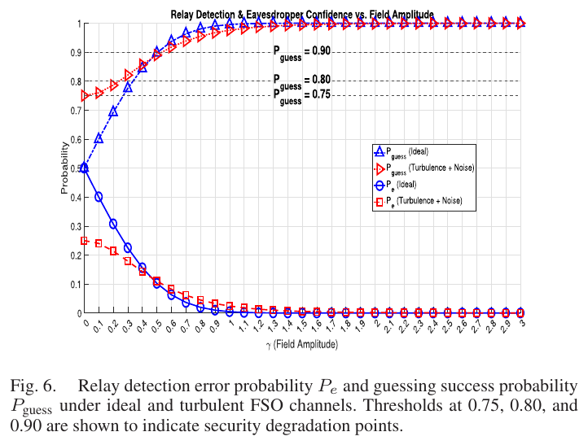
Nguồn: Bhatnagar, Arti, Bhatnagar, IEEE Photonics J. 17(3), 2000215, 2025, Fig. 6, tr. 10
- \(P_\mathrm{guess}=0{,}80\)đạt ở \(\gamma=0.334\) (lý tưởng) và \(0.235\) (Eq. 39)
Tại \(\gamma=0{,}25\), \(\alpha=4{,}2,\beta=1{,}4,\sigma=0{,}1\): lý tưởng 0.265, Eq. (39) 0.196, hỗn hợp 0.301. Thứ tự vật lý đúng (hỗn hợp cao hơn lý tưởng) chỉ có ở cột hỗn hợp.
Độ chính xác của oracle phụ thuộc lưới
| \((n_I,n_W)\) | \(P_e\ (\bar n=0{,}6,\sigma=0{,}5)\) | \(P_e\ (\bar n=2,\sigma=1)\) |
|---|---|---|
| (12, 5) | 0.174499 | 0.1550025 |
| (24, 7) | 0.1631004 | 0.1490961 |
| (48, 41) | 0.163105 | 0.147223 |
| (96, 81) | 0.163105 | 0.147223 |
- \(\alpha=4,\beta=1{,}9,\ d=16/32\)tham số thử
Fock truncation và phần vết bị mất
- \(d\)chiều Fock truncation
- \(\varepsilon_d\)phần vết mất
| \(d\) | \(\bar n=0{,}6,\sigma=0{,}5\): \(P_e\) | mất vết | \(\bar n=5,\sigma=1\): \(P_e\) | mất vết |
|---|---|---|---|---|
| 8 | 0.16372 | 0.004 | 0.099659 | 0.29 |
| 12 | 0.16315 | 3.2×10−4 | 0.084343 | 0.17 |
| 16 | 0.16311 | 2.9×10−5 | 0.07757 | 0.094 |
| 24 | 0.1631 | 3.1×10−7 | 0.072429 | 0.031 |
| 48 | 0.1631 | 2.8×10−12 | 0.070223 | 0.0015 |
Tính chẵn lẻ và giới hạn thuần
- \(\Pi\)toán tử chẵn lẻ số photon
Vì \(\langle n|{-}\beta\rangle=(-1)^n\langle n|\beta\rangle\). Hệ quả: chỉ cần mạng học \(\rho_0\), còn \(\rho_1\) suy ra. Kiểm số: sai khác lớn nhất 1.1×10−16, vết 1, trị riêng nhỏ nhất 3.36×10−12 (\(\ge0\): hợp lệ).
Giới hạn không nhiễu loạn, không nhiễu (\(\alpha_{GG}=\beta_{GG}=4\cdot10^4,\sigma=10^{-4}\)): oracle 0.0350674 so với Eq. (5) 0.0350633.
So sánh bốn cách tính Helstrom bound
| phương pháp | chi phí | chính xác | dùng khi |
|---|---|---|---|
| Eq. (39) đóng | micro giây, cần độ chính xác cao | thấp ở \(\gamma\) nhỏ và \(\sigma\) lớn | quét nhanh, \(4\gamma^2\gg1\) |
| Ma trận mật độ Eq. (24) | Meijer-G, \(O(d^3)\) | chậm hội tụ theo \(d\) (Fig. 3) | kiểm tra lý thuyết |
| Quadrature oracle | ~ms, \(O(n_In_Wd^2+d^3)\) | gần đúng chính xác | nhãn huấn luyện, chuẩn đối chiếu |
| Mạng surrogate | ~0,12 ms/mẫu | MSE ~\(10^{-4}\) (dự án) | quét tham số, Monte Carlo lớn |
Phép tính Helstrom chính xác cho \(d\times d\): \(O(d^3)\) với \(d=16\) chỉ khoảng 4096 phép nhân; SDP chậm chủ yếu vì chi phí giải bài toán lồi, không vì kích thước.
Vai trò của bài gốc trong đường ống surrogate
- \(\sigma_R^2\)đặc trưng vật lý mà MLP khó tự học
- \((\rho_0,\rho_1)\)nhãn trạng thái cho hàm mất mát
Mạng học hàm \(P_e(\bar n,\sigma,\alpha,\beta)\) mượt này; nhãn đến từ oracle ở mục trước. Đây là lý do cần lưới (48, 41) thay vì (24, 7): nhãn sai sẽ bị mạng học theo.
Tổng kết và ba con số then chốt
- \(\bar n=\gamma^2\)photon trung bình
- Cận thuần giả sử không có kênh: chỉ phụ thuộc \(\bar n\).
- Eq. (39) là cận dưới xấp xỉ của một máy thu biết fading.
- Quadrature oracle là Helstrom hỗn hợp, cận đúng cho máy thu không biết \(I\), \(\epsilon\).
Nội dung chi tiết
Bối cảnh lý thuyết và lịch sử
Bài toán phân biệt hai trạng thái lượng tử có lời giải đóng từ Helstrom (1969, 1976): lỗi nhỏ nhất bằng \(\tfrac12(1-\|p_1\rho_1-p_0\rho_0\|_1)\). Với trạng thái coherent, Dolinar (1973) đề xuất máy thu đạt cận này bằng phản hồi, còn Holevo (1982) và Wilde (2017) mở rộng sang trạng thái hỗn hợp. Phía kênh, Andrews và Phillips (2005) và Al-Habash (2001) đưa mô hình Gamma-Gamma cho cường độ qua khí quyển. Bhatnagar, Arti và Bhatnagar (2025) ghép hai nhánh và thêm relay decode-and-forward.
Nói nôm na, kỹ thuật, bảng, phép tính
Nôm na: hai xung laser yếu ngược pha gần giống nhau, khí quyển làm chúng scintillation và nhiễu làm chúng nhoè. Kỹ thuật: trạng thái nhận là hỗn hợp \(\bar\rho_i=\mathbb E_{I,\epsilon}|\beta\rangle\langle\beta|\); Helstrom bound là \(\tfrac12(1-\sum|\lambda_k|)\) với \(\lambda_k\) của \(\tfrac12(\bar\rho_0-\bar\rho_1)\). Bảng: ba cách tính ở slide "Eq. (39), trung bình Eq. (36) và Helstrom hỗn hợp". Phép tính: xem các ví dụ dưới.
\(\bar n=0{,}5\): \(e^{-4\bar n}=e^{-2}=0.1353\); \(\sqrt{1-0.1353}=0.9299\); \(P_e=\tfrac12(1-0.9299)=0.03506\). Xấp xỉ \(\tfrac14e^{-2}=0.03383\) lệch -3.51%.
Giải \(\tfrac14e^{-4\bar n}=10^{-3}\): \(\bar n=\tfrac14\ln250=1.38\) photon/xung. Ở bước sóng 1,55 \(\mu\)m, một photon mang \(1{,}28\cdot10^{-19}\) J nên xung cần khoảng \(1.77\cdot10^{-19}\) J (minh hoạ, bỏ qua tổn hao).
\(C_n^2=5\cdot10^{-14}\), \(\lambda=1{,}55\,\mu\)m, \(L=1200\) m: \(k=4{,}054\cdot10^6\) m\(^{-1}\), \(\sigma_R^2=1{,}23\,C_n^2k^{7/6}L^{11/6}=1.391\). Dạng chuẩn: \(\alpha=4.091\), \(\beta=2.071\); scintillation index \(\sigma_I^2=0.8453\). Đêm trời quang (\(C_n^2\sim10^{-15}\)) thì scintillation yếu hơn nhiều.
Tuyến 2400 m, \(\gamma=1\): trực tiếp \(P_e=0.04766\), relay hai chặng 1200 m cho \(P_{e,1}=P_{e,2}=p\) và \(2p(1-p)=0.0774\): kém hơn. Ở \(\gamma=4\): 0.001623 so với 0.001386: relay tốt hơn (Eq. 39, 40, 12; \(\sigma=0{,}1\)).
\(\sigma=1,\gamma=2,\alpha=4,\beta=1{,}9\): Eq. (39) 0.02741, trung bình Eq. (36) 0.03863, Helstrom hỗn hợp 0.08621. Nếu thiết kế theo Eq. (39), lỗi thật sẽ gấp 3.15 lần dự báo (giả định: máy thu không biết \(I,\epsilon\)).
\(d=16\), \(\bar n=5,\sigma=1\): mất vết 0.0943, \(P_e=0.07757\) so với \(d=48\): 0.070223. Dự án chấp nhận vì miền \(\bar n\) lớn hiếm.
Fig. 3 của bài vẽ ba đường ở \(\alpha=4{,}0,\beta=1{,}9,\sigma=1\). Đọc ở \(\gamma=1\): đường đóng Eq. (39) cho 0.05718 bằng tính lại của chúng tôi. Đầu phải (\(\gamma=4\)) bài vẽ cỡ \(10^{-3}\) còn tính lại ở \(\sigma=1\) cho 0.00659; \(\sigma=0{,}1\) cho 7.10×10−4. Chúng tôi chưa tái lập được đầu phải của hình với \(\sigma=1\) như chú thích (số đọc từ hình chỉ gần đúng).
Bẫy khi làm bài
- Nhầm \(|\alpha|\) với \(|\alpha|^2\): độ chồng lấn bình phương là \(e^{-4|\alpha|^2}\), không phải \(e^{-4|\alpha|}\).
- Quên hệ số \(\tfrac12\) hoặc \(\tfrac14\) khi dùng xấp xỉ \(\tfrac14e^{-4\bar n}\).
- Dùng \(\gamma\) và \(\bar n\) lẫn lộn: \(\bar n=\gamma^2\).
- Tính Eq. (39) bằng float64: cần mpmath khi \(\gamma\) nhỏ.
- Dùng \(\sum\lambda_k\) thay cho \(\sum|\lambda_k|\) ở Eq. (26).
Phát hiện về thư mục nguồn
- Thư mục chỉ có một PDF (đã đọc đủ 15 trang). Các file còn lại là ghi chú phân tích (.md, .tex), sơ đồ (.puml, .png) và một notebook.
- README.md gọi bài là "Relay-Assisted Quantum Communication in Free-Space Optical Channels" và mô tả giao thức "amplify-and-forward"; bài thật là Quantum Relay-Assisted Free-Space Optical Communication và dùng decode-and-forward (Eq. 12). README còn nhắc các file PDF của .tex không có trong thư mục.
- Untitled.ipynb trống. Notebook tái lập chỉ còn bản checkpoint (.ipynb_checkpoints); trong đó Fig. 1 và Fig. 4 được vẽ bằng hàm mũ tự chế, không từ công thức Rytov, nên không dùng làm bằng chứng.
- Notebook cài \(\sigma_R^{12/5}\) (dạng chuẩn), khác bản in; hai bản đều không tái lập bảng \(\alpha,\beta\) theo \(L\).
Thực hành tương tác
Tự kiểm tra nhanh
Luyện tập sâu
Mở ngân hàng 46 câu trắc nghiệm và 5 bài viết code →
Tài liệu tham khảo
- M. R. Bhatnagar, M. K. Arti, K. Bhatnagar, Quantum Relay-Assisted Free-Space Optical Communication, IEEE Photonics J. 17(3), 2000215, 2025.
- C. W. Helstrom, Quantum detection and estimation theory, J. Stat. Phys. 1(2), 231-252, 1969.
- L. C. Andrews, R. L. Phillips, Laser Beam Propagation through Random Media, SPIE, 2005.
- M. A. Al-Habash et al., Opt. Eng. 40(8), 1554, 2001.
- M. M. Wilde, Quantum Information Theory, Cambridge Univ. Press, 2017.